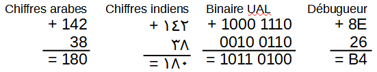
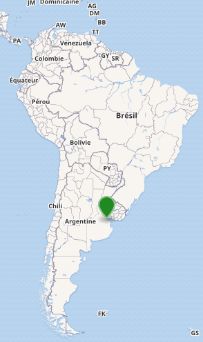

Est-ce qu'il s'agit de données ou d'informations ?
Valeur
Type
{{valeur}}
Transformer ces données en des informations. Puis interpéter.
Valeur
Type
{{valeur}}
Transformer ces données en des informations. Puis interpéter.
Réponses
Ce composant électronique nécessite 12V-50mA pour fonctionner correctement.
Pour préparer la tarte aux pommes il faut 5 🍎.
La finale de coupe du monde est jouée le 18/12/2022.
Le débit de la carte réseau est 100Mbps.
Le réservoir d'essence est vide.
La température ambiante aujourd'hui est 19°C
Interprétation
Une donnée est une information brute, sans contexte, représentée sous un format adapté à son traitement.
Une information peut avoir plusieurs représentations.
Une information est le résultat de la contextualisation d'une ou de plusieurs données. Une même donnée peut
avoir plusieurs interprétations selon son contexte.
Activité 2
Repondre aux questions suivantes :
Calculer cent quarante deux plus trente huit.

Opération de calcul dans différents formats
Quelle est l'équipe qui a gagné la coupe du monde en 2022 ?
C'est l'Argentine qui est le champion du monde de foot en 2022.

Carte de l'Amérique du sud
Quelle est votre date de naissance ?
-
English US format : {{englishDate}} -
ISO format : {{date}}
Nombre de secondes depuis 01/01/1970 (Linux epoch) au {{theDate}} : {{secondes}}
secondes
Nombre de jours depuis 30/12/1899 (Date réf. LibreOffice) au {{theDate}}
: {{jours}} jours
Votre âge est {{Math.floor(ageJours / 365)}} ans ou {{ageJours}} jours
Quelle est votre note en mathématiques ?
Note en système américain : {{amGrade}} - Note en système belge :
{{belgianGrade}}
Est-ce que vous êtes satisfait du système éducatif en Tunisie ? Oui / Non
Quel est votre niveau en français ? Médiocre / Mauvais / Moyen / Bon / Très bon / Excellent
Interprétation
Pour pouvoir exploiter les données il faut les représenter sous un format adapté à leurs traitements.
Les données peuvent possèder divers formats dont :
Textuel : sous forme d'une chaîne de caractères.
Numérique : sous forme d'un ou de plusieurs valeurs numériques.
Booléen : sous forme d'une réponse à une question vrai ou faux.
Finalement, on remarque qu'il existe principalement deux types de données :
les données quantitatives , comme le nombre de chiens, ils prennent des valeurs
numériques qui nous permettent d'effectuer des opérations mathématiques. Ces données peuvent être
divisées en deux catégories :
donnée continue, peut prendre n'importe quelle valeur numérique, y compris les
valeurs décimales.
et discrètes, qui prend des valeurs dénombrables, comme par exemple le nombre
de chiens.
et des données catégorielles, comme la race, fréquemment utilisées pour
étiqueter un groupe ou un ensemble d'éléments. Ces données peuvent être classées dans deux catégories
:
données ordinales, valeurs classées, par exemple le système de notes américain
A+, A, A-, etc.
et données nominales, qui n'ont pas d'ordre de classement, par exemple les
races des chiens : Labrador, Poodle, Pug, Chihuahua, etc.
Exercice
Question 1
Pour chaque variable ci-dessous, identifiez-les comme quantitatives ou catégorielles.
Code postal - Âge-Revenu - État matrimonial (Célibataire, Marié, Divorcé, etc.) - Hauteur - Notes
alphabétiques (A+, A, A-, B+, B, B-, ...) - Distance de trajet jusqu'au travail - Évaluations d'un sondage
(médiocre, correct, excellent) - Température - Vitesse moyenne
Question 2
Pour chaque variable ci-dessous, identifiez chacune comme continue ou discrète.
Distance du domicile au travail - Nombre de pages dans un livre - Quantité de pluie par an - Il est temps de
courir
un mile - Quantité d'eau consommée dans la journée - Nombre de téléphones portable par ménage
Question 3
Exercice 3
Pour chaque variable ci-dessous, identifiez-les comme ordinales ou nominales.
Notes alphabétiques (A, B+, B, B-, etc.) - Types de fruits (Pomme, Banane, etc.) - Note sur une enquête -
Types de races de chiens (berger allemand, colley, etc.) - Genres de films (Horreur, Comédie, etc.) - Le
genre - Nationalité - Formation (HS, Associates, Bachelor, Master, PhD, etc.)